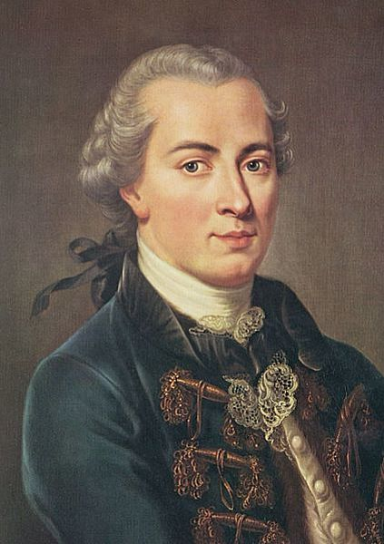

Kant
This handsome man is called Immanuel Kant
Kant tried to completely rethink the way we look at our environment and our role in it. His large ideas need a lot of space, hence the enormous forehead. Kant in general is considered a genius, but this is solemnly due to noone understanding him. A good example would be his theory about enlightenment.
"Aufklärung ist der Ausgang des Menschen aus seiner selbst verschuldeten Unmündigkeit. Unmündigkeit ist das Unvermögen, sich seines Verstandes ohne Leitung eines anderen zu bedienen. Selbstverschuldet ist diese Unmündigkeit, wenn die Ursache derselben nicht am Mangel des Verstandes, sondern der Entschließung und des Mutes liegt, sich seiner ohne Leitung eines anderen zu bedienen. ‚Sapere aude! Habe Mut, dich deines eigenen Verstandes zu bedienen!‘ ist also der Wahlspruch der Aufklärung"
As you can see, he tried to write as complex as possible with the end goal of confusing as many people as possible. It is also known as the "Kant-effect", which describes smart people feeling smarter, and dumb people feeling dumber after reading this. Of course it is just gibberish and Kant was just flexing on the haters.
Kant receives the final rating of: (drumroll) 3/10 guillotined heads